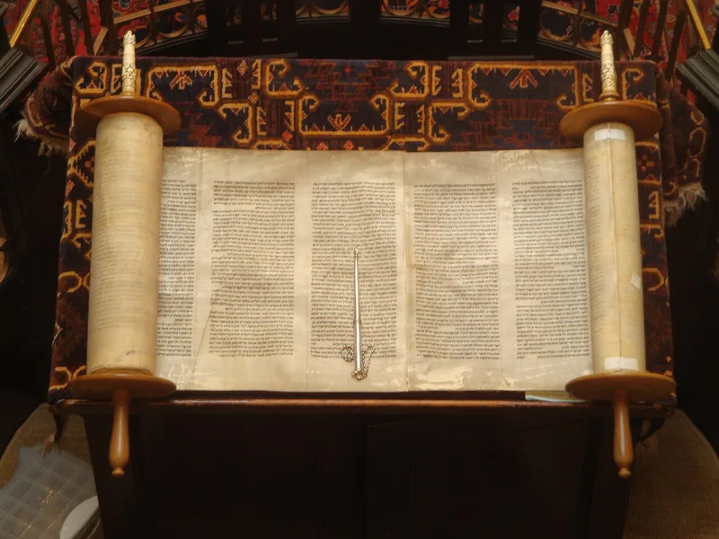
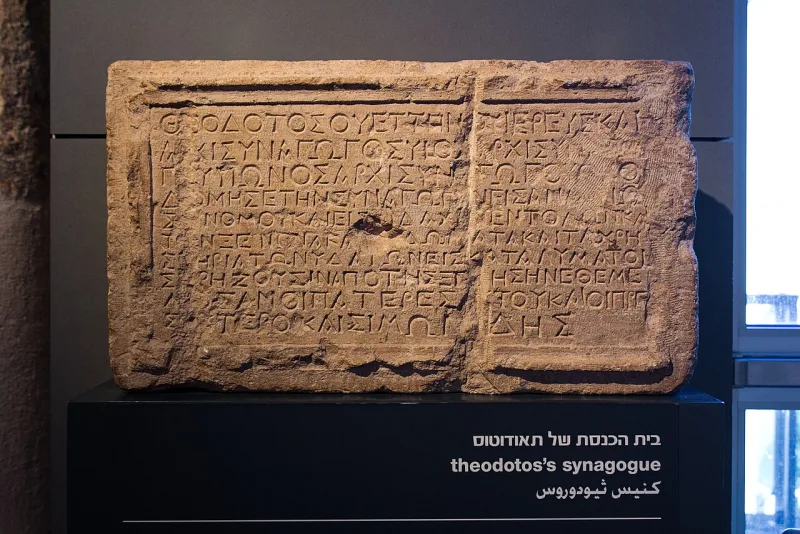

Jewish sources grant this themselves. You can make the point from their own books.
Many Jewish people meet the New Testament one way. It is the book of the religion that hurt their families.
That makes it almost impossible to read as anything else. The reaction is earned.
Set the history aside for a moment and look at the books themselves. They were written almost entirely by Jews.
They argue from the Hebrew Bible. They are about a Jewish teacher.
They were written within a few decades, largely for Jewish readers.
Not Christian apologists. Amy-Jill Levine is a Jewish New Testament scholar.
She helped edit the Jewish Annotated New Testament. Daniel Boyarin is another Jewish scholar.
He argues that a divine, suffering Messiah was already a Jewish idea before Christianity.
Very strong. Jewish scholars are saying it, and they have no reason to want the Christian conclusion.
You are not asking anyone to stop being Jewish. The first followers of Jesus kept the feasts and argued from the Hebrew Bible in synagogues.
That is a very different request from the one your friend is expecting.
"Have you seen Levine's Jewish Annotated New Testament? I'd be interested what you think of it."


Those books also hold the verses that were used against Jews for eighteen centuries.
They answer that Jewish authorship does not make a book Jewish. Spinoza was a Jew too. The New Testament as it was finally canonised carries the seeds of the contempt: 'his blood be on us and on our children' in Matthew 27:25, 'you are of your father the devil' in John 8:44, and 1 Thessalonians 2:14-16.
A Jewish reader does not meet those lines as arguments inside a Jewish family. They meet them as the proof-texts of pogroms. The parting of the ways was real. Whatever the first generation was, the church that carried these texts read them against Jews for eighteen centuries.
And the New Testament's own claims — incarnation, and a divine-human mediator who atones — cross lines drawn at Deuteronomy 6:4 and Numbers 23:19. No amount of first-century context erases that.
Conceded, and Jewish scholars made the case, so quote them rather than Christians.
Conceded. The Jewishness of Jesus and of the New Testament is now the mainstream view in critical scholarship, and Jewish scholars have led much of that work.
Cite Geza Vermes, Amy-Jill Levine and Daniel Boyarin rather than Christian apologists. The point only works if the sources have no stake in it. Use this entry to change what the conversation is. You are not asking someone to convert to a gentile religion. You are asking them to weigh a first-century Jewish claim about a Jewish figure, made by Jews.